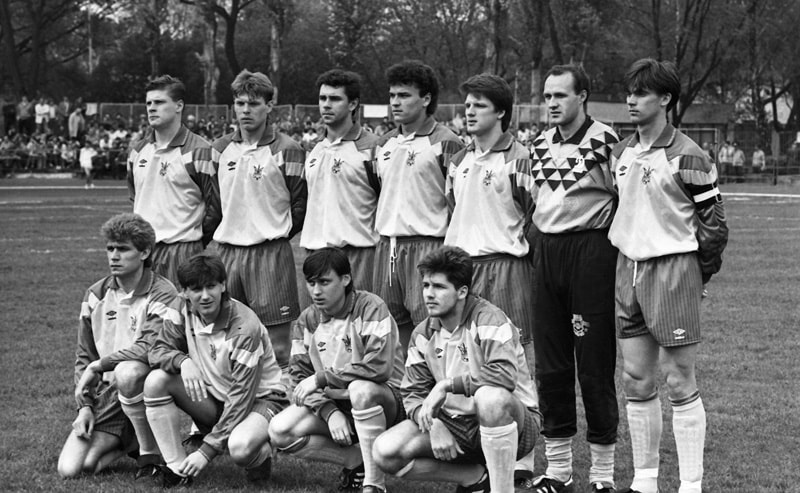
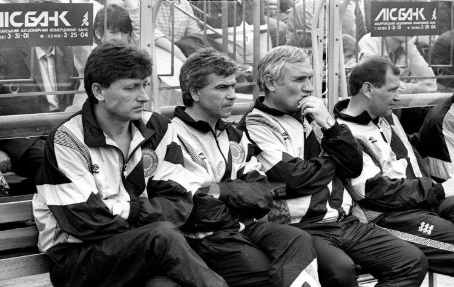

Історичний перший матч національної збірної України з футболу
Трохи більше, ніж через місяць, а точніше 29 квітня виповниться 33 роки з моменту проведення першого офіційного матчу національної збірної України.
Так звана прем’єра відбулася після того, як із ФІФА та УЄФА надійшли документи про надання Федерації футболу України статусу тимчасового члена організацій.
Вибір суперника пояснювався насамперед географічним чинником. Місцем зустрічі логічно обрали прикордонний Ужгород.
Тренером бачили Лобановського
Через дефіцит фінансів не склалося із запрошенням легіонерів. До розширеного списку із 41-го футболіста ввійшли: Чанов, Кузнецов, Михайличенко, Литовченко, Протасов, Заваров, Бєланов, Лютий, Юран і Канчельскіс. Але, не маючи можливості оплатити хоча б переліт гравців, ніхто у ФФУ не педалював тему їхнього виклику.
Головним тренером хотіли призначити Валерія Лобановського, який у той час очолював збірну ОАЕ. І до Еміратів навіть було надіслано запрошення. Але Валерій Васильович дав зрозуміти, що буде готовий пристати на нього лише після закінчення терміну чинного контракту.
Зрештою наставника було вирішено обирати з-поміж членів тренерської ради, до якої ввійшли Анатолій Пузач («Динамо»), Євген Кучеревський («Дніпро»), Євген Лемешко («Торпедо»), Юхим Школьников («Буковина»), Віктор Прокопенко («Чорноморець») і Валерій Яремченко («Шахтар»). На останньому етапі коло звузилося до трьох спеціалістів. До Ужгорода збірну повезли Пузач, Яремченко і Прокопенко. Останній із них, за домовленістю між самими тренерами, і став головним.
-
Воротарі:
- Кутєпов («Динамо»),
- Гришко («Чорноморець»).
-
Захисники:
- Лужний, Мороз (обидва — «Динамо»),
- Никифоров, Третяк (обидва — «Чорноморець»),
- Драгунов («Шахтар»),
- Беженар («Дніпро»).
-
Півзахисники:
- Анненков, Ковалець, Заєць (усі — «Динамо»),
- Шелепницький, Сак, Цимбалар (усі — «Чорноморець»),
- Погодін («Шахтар»),
- Дудник («Металург» З).
-
Нападники:
- Саленко («Динамо»),
- Гецко, Гусєв (обидва — «Чорноморець»),
- Щербаков («Шахтар»).
Слід відзначити, що стадіон «Авангард» того дня був забитий ущент, а квиток на історичний матч коштував 50 карбованців.